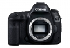
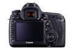
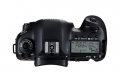

器材库 > 35mm画幅可换镜头数码相机 > EOS 5D Mark IV

规格总览
产品类型
35mm画幅可换镜头数码相机
发布日期
2016-08-25
影像规格
影像传感器
CMOS
影像传感器尺寸
36×24mm
有效像素
约3040万
静态图像尺寸
L：6720×4480, M：4464×2976, S1：3360×2240, S2：1920×1280, S3：720×480, RAW：6720×4480, M-RAW：5040×3360, S-RAW：3360×2240
静态图像格式
JPEG, RAW, RAW+JPEG
短片尺寸
4096×2160（4K视频）：29.97p/25p/24p/23.98p 1920×1080（全高清）：59.94p/50p/29.97p/25p/24p/23.98p 1280×720（高清）：119.9p/100p
短片格式
MOV, MP4
音频格式
MOV：线性PCM、MP4：AAC
除尘系统
自动、手动、添加除尘数据
镜头和对焦
镜头卡口
Canon EF
兼容镜头
佳能EF系列镜头（EF-S、EF-M镜头除外）
对焦系统类型
TTL辅助影像重合，使用专用自动对焦感应器的相差检测
对焦点
61点（最多41个十字型对焦点）
对焦模式
单次自动对焦、人工智能伺服自动对焦、人工智能自动对焦、手动对焦
曝光控制
测光系统
使用约15万像素 RGB+红外 测光感应器、252区TTL全开光圈测光EOS iSA（智能被摄体分析）系统
测光模式
评价测光, 点测光, 局部测光, 中央重点平均测光
测光范围
0EV~20EV
拍摄模式
场景智能自动、程序自动曝光、快门优先自动曝光、光圈优先自动曝光、手动曝光、B门曝光、自定义拍摄模式（C1、C2、C3）
快门类型
电子控制焦平面快门
快门速度
1/8000至30秒（总快门速度范围。可用范围随拍摄模式各异）、B门、闪光同步速度1/200秒
曝光补偿
±5EV以1/3或1/2EV级调整
自动曝光锁
有
自动包围曝光
在±3级间以1/3或1/2级为单位调节
ISO感光度
场景智能自动：在ISO 100～12800之间自动设置P,Tv,Av,M,B：自动ISO、在ISO 100-32000范围内手动设置（以1/3级或整级为单位），可扩展到L（相当于ISO 50）、H1（相当于ISO 51200）、H2（相当于ISO 102400）
白平衡
自动（氛围优先)、自动（白色优先)、预设（日光、阴影、阴天、钨丝灯、白色荧光灯、闪光灯）、用户自定义、色温（约2500-10000K）
自拍
10秒 / 2秒
连拍
最高约7张/秒
闪光灯
闪光模式
E-TTL II
闪光补偿
±3EV以1/3或1/2EV级调整
外接闪光灯
EX系列闪光灯
取景器/显示屏
取景器
眼平五棱取景器
取景范围
100%
取景放大倍率
约0.71倍
屈光度调节范围
约-3.0～+1.0 m-1（dpt）
对焦屏
固定式
反光镜
快回型
取景器信息
电池电量、拍摄模式、白平衡、驱动模式、自动对焦操作、测光模式、图像类型：JPEG/RAW、数码镜头优化、全像素双核RAW、闪烁检测、警告指示、自动对焦状态指示
景深预视
有
LCD类型
彩色TFT LCD
LCD尺寸
3.2英寸
LCD像素
约162万
LCD特性
触摸屏
亮度调节级数
自动（暗、标准、亮）、手动（7级）
Live View
有
Live View 对焦模式
面部＋追踪、自由移动多点、自由移动1点手动对焦（可进行约5倍、10倍放大确认）
文件输入/输出
存储卡
CF, SD/SDHC, SDXC
数据接口
USB3.0
视频/音频接口
HDMI Mini 输出
无线功能
Wi-Fi, NFC
支持打印协议
DPOF
电源
电池
电池LP-E6N或LP-E6（1块）
续航能力
使用取景器拍摄：23℃时约900张、0℃时约850张 使用实时显示拍摄：23℃时约300张、0℃时约280张
机身规格
颜色
黑色
尺寸
150.7×116.4×75.9mm
重量
仅机身约800g / 含电池和存储卡约890g
其它
配件端口
遥控线, 耳机, 脚架螺丝孔, 麦克风输入端子
工作温度
0~40℃
工作湿度
不高于85%
附件
电池充电器 LC-E6E（含电源线），锂电池 LP-E6N，USB接口连接线 IFC-150U II，连接线保护器，相机宽背带
starx2018-05-28 11:254.88 分
操作性 5.00功能性 5.00美观性 5.00趣味性 4.50耐用性 5.00性价比 5.00解像力 4.50色彩还原 5.00
匿名网友2018-02-21 14:144.56 分
操作性 5.00功能性 5.00美观性 5.00趣味性 5.00耐用性 4.50性价比 3.50解像力 4.50色彩还原 4.00
匿名网友2018-02-12 12:194.75 分
操作性 5.00功能性 5.00美观性 4.50趣味性 4.50耐用性 5.00性价比 4.00解像力 5.00色彩还原 5.00
Leos2017-10-18 15:194.94 分
操作性 5.00功能性 4.50美观性 5.00趣味性 5.00耐用性 5.00性价比 5.00解像力 5.00色彩还原 5.00
扎卡2017-09-27 22:585 分
操作性 5.00功能性 5.00美观性 5.00趣味性 5.00耐用性 5.00性价比 5.00解像力 5.00色彩还原 5.00
寒山飞雪2017-09-24 12:004.69 分
操作性 4.50功能性 5.00美观性 5.00趣味性 5.00耐用性 5.00性价比 4.00解像力 4.50色彩还原 4.50
哈斯2017-09-03 00:444.5 分
操作性 4.50功能性 4.50美观性 4.50趣味性 4.50耐用性 5.00性价比 4.00解像力 4.50色彩还原 4.50
ycq8910302017-03-22 14:284.75 分
操作性 5.00功能性 5.00美观性 5.00趣味性 5.00耐用性 4.50性价比 4.00解像力 4.50色彩还原 5.00
elliotliu2017-03-06 08:565 分
操作性 5.00功能性 5.00美观性 5.00趣味性 5.00耐用性 5.00性价比 5.00解像力 5.00色彩还原 5.00
笨笨小邱2016-10-25 16:314.63 分
操作性 4.50功能性 5.00美观性 5.00趣味性 5.00耐用性 4.50性价比 4.00解像力 4.50色彩还原 4.50
笨笨小邱2016-10-25 16:314.63 分
操作性 4.50功能性 5.00美观性 5.00趣味性 5.00耐用性 4.50性价比 4.00解像力 4.50色彩还原 4.50
iron01292016-10-16 17:564.81 分
操作性 5.00功能性 5.00美观性 5.00趣味性 5.00耐用性 5.00性价比 4.00解像力 4.50色彩还原 5.00
bluedryad2016-10-03 17:255 分
操作性 5.00功能性 5.00美观性 5.00趣味性 5.00耐用性 5.00性价比 5.00解像力 5.00色彩还原 5.00
bluedryad2016-10-03 17:255 分
操作性 5.00功能性 5.00美观性 5.00趣味性 5.00耐用性 5.00性价比 5.00解像力 5.00色彩还原 5.00
产品图 / 样片
EOS 5D Mark IV

EOS 5D Mark IV

EOS 5D Mark IV
评测 / 相关文章
- 详细内容 （存档）
- 恪守中庸之道 佳能EOS 5D Mark IV详细评测 （存档）
- ［资讯］5DMarkIV全像素双核RAW技术分析 （存档）
- ［资讯］用户注意 适马镜头与5D4存在兼容问题 （存档）
- ［资讯］续写5D传奇 说出你与EOS 5D系列的故事 （存档）
- ［资讯］索尼A99II与5D4、D810体积对比 （存档）
- ［试用］我的5系集结号 我的EOS 5D Mark IV （存档）
- ［行情］继续缓和 佳能5D4单机身价格走低 （存档）
- ［资讯］佳能EOS 5D MarkIV拆解大揭秘 （存档）
- ［行情］不到2.4万 佳能5D Mark IV国内定价曝光 （存档）
- ［试用］画质优异！佳能5D4人像样片大放送 （存档）
相关文章
- ［资讯］5DMarkIV全像素双核RAW技术分析 （存档）
- ［资讯］用户注意 适马镜头与5D4存在兼容问题 （存档）
- ［资讯］续写5D传奇 说出你与EOS 5D系列的故事 （存档）
- ［资讯］索尼A99II与5D4、D810体积对比 （存档）
- ［试用］我的5系集结号 我的EOS 5D Mark IV （存档）
- ［行情］继续缓和 佳能5D4单机身价格走低 （存档）
- ［资讯］佳能EOS 5D MarkIV拆解大揭秘 （存档）
- ［行情］不到2.4万 佳能5D Mark IV国内定价曝光 （存档）
- ［试用］画质优异！佳能5D4人像样片大放送 （存档）
- ［试用］佳能EOS 5D Mark IV详细评测 （存档）
- ［试用］佳能5D4记录滇南风光 （原站已下线）
- ［行情］继续下跌！佳能5D4最新低价 （原站已下线）
- ［影像］地理摄影师的佳能5D4图集 （原站已下线）
- ［试用］地理摄影师的5D4记忆片段 （原站已下线）
- ［试用］性能均衡的多面手 5D4运动拍摄体验 （原站已下线）
- ［试用］5D4行摄之路—春节香港扫街 （原站已下线）
- ［试用］藏地初试佳能5D4 （原站已下线）
- ［行情］佳能5D Mark IV限时特价 （原站已下线）
- ［试用］我纪录的《芳华》 5D4和芭蕾舞后台的姑娘们 （原站已下线）
- ［影像］一路走来 从佳能5D2到1DX到5D4 （原站已下线）
- ［试用］当佳能5D4遇上秘境哀牢山 （原站已下线）
- ［试用］我用EOS 5D4拍摄夏季美景 （原站已下线）
- ［行情］佳能5D4机身继续跌价 （原站已下线）
- ［试用］我用佳能5D4拍霞浦（风光篇） （原站已下线）
- ［试用］我用佳能5D4拍霞浦（人文篇） （原站已下线）
- ［试用］佳能5D4+EOS M6甘南掠影 （存档）
- ［试用］佳能EOS 5D Mark IV行摄川西线 （原站已下线）
- ［试用］从7D到5D4，感受七年间的进化 （存档）
- ［试用］无敌狮远行加勒比海 探寻古巴风情 （原站已下线）
- ［试用］谁是5D画质王 佳能5DS与5D4对比评测 （原站已下线）
- ［资讯］EOS 5Ds和EOS 5D4对比总结 （原站已下线）
- ［试用］佳能EOS 5D Mark IV最优秀也最均衡 （原站已下线）
- ［试用］看5D4极寒挑战 萌娃暖爸的贝加尔湖之旅 （原站已下线）
- ［试用］感受西伯利亚的极寒 带着女儿贝加尔湖看蓝冰 （原站已下线）
- ［影像］开始吧 EOS 5D4的行摄之路 （原站已下线）
- ［试用］月照金山 佳能5D4遇见白色梅里雪山 （原站已下线）
- ［试用］佳能5D4初体验 无忌游香格里拉小环线行摄 （原站已下线）
- ［试用］泡菜升级之路 从键盘党到5D4 （原站已下线）
- ［试用］有图有真相 佳能5Ds和5D4对比总结 （原站已下线）
- ［资讯］Imaging Resource评选本年最牛相机 （存档）